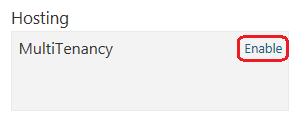
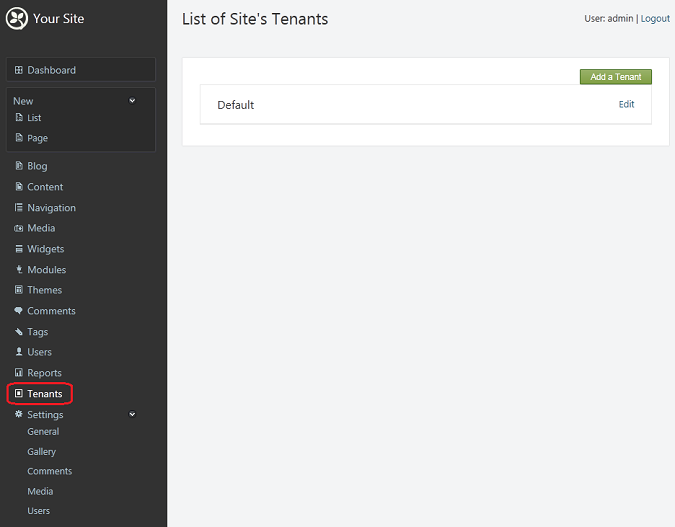
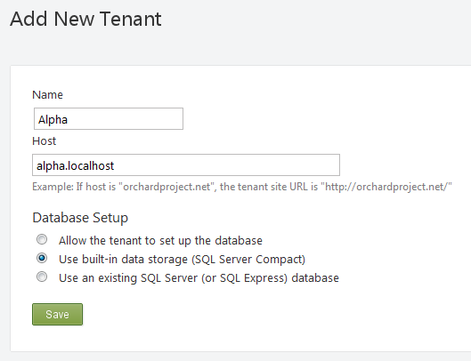
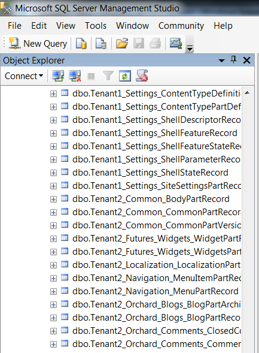
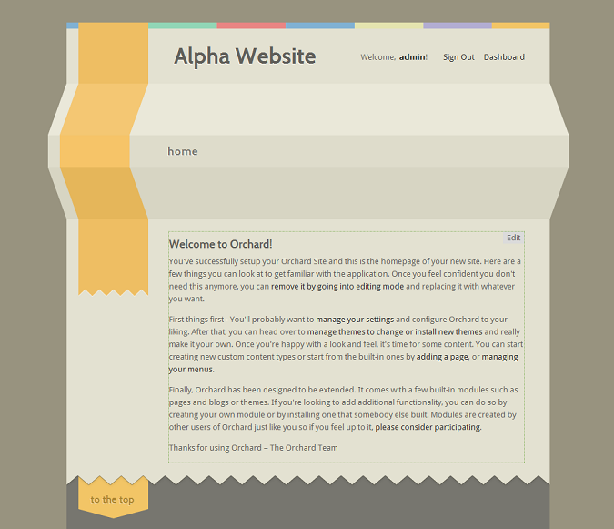
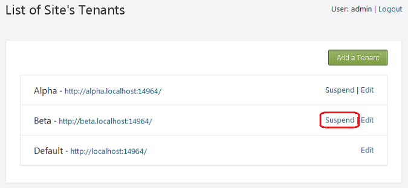

When running Orchard, you most often will run a single site in a single application domain (app domain), which in ASP.NET terms is an isolation boundary between applications. However, Orchard provides an additional isolation boundary between sites, referred to as multi-tenancy, that allows you to run multiple Orchard sites within a single ASP.NET app domain. This is useful because app domains are generally expensive to initialize, tear down, and recycle from memory usage standpoint. Running multiple isolated Orchard sites in a single app domain can allow more sites to fit on a single server, which is favored by hosting providers to keep costs down. The assumption is that cost savings for hosting providers result in lower cost for hosting customers. Multi-tenancy is particularly nice in a Windows Azure environment, because one deployment to Azure can easily support multiple websites.
Note: If you want to set up a multi-tenant test site on your local machine, first read Testing Multi-Tenancy on a Local Machine later in this article.
Enabling Multi-Tenancy
By default, the multi-tenancy feature is not enabled when you install Orchard. To enable multi-tenancy, open the Orchard dashboard, click Modules, find the Multi Tenancy feature under Hosting, and then click Enable.

Once multi-tenancy is enabled, you see a Tenants dashboard menu section. A tenant refers to a separate site configuration inside of the default tenant, which is initial site created after you install Orchard. You can think of the default tenant as the landlord of an apartment building who can provision new apartments and decide the terms for each tenant, and the individual tenants as inhabitants of each apartment.
Adding Tenants
Initially, you will only have a single tenant, which is the Default tenant.

To provision another tenant site, click Add a Tenant.

The Add New Tenant screen asks for the name of the tenant (the name may not contain spaces), and the host domain that will map to the tenant. As the landlord for your tenants, you decide whether the tenant should be allowed to configure the database (on the Orchard setup screen), or whether you want to configure the database on behalf of the tenant.
After you've decided how to provision your new tenant site, click Save. Under List of Site's Tenants you see the new tenant.

To provision the new tenant site, click Set Up. The Orchard setup screen is displayed, as if you were setting up a brand new Orchard installation. However, the database options are not displayed, because they were decided when the tenant was added.
Note: If you decide to use an existing database for your tenant, you will be asked for the connection string and for a table prefix. The table prefix will be added to each of the tenant's tables within the database:

Working with Tenant Sites
Isolated tenants can each have a unique configuration of content items, enabled features, and applied themes. Tenants all share the same file system view of the application, however, so the list of available modules and themes will be the same for each tenant. In the following screenshots, the Alpha tenant and the Beta tenant have different themes applied.


You can take a tenant site offline at any time. Under List of Site's Tenants for your default site, click Suspend for the site you want to take offline.

To bring the tenant site back online, click Resume.
Removing Tenants
Currently, there is no UI to remove a tenant, but it can be done by going to the App_Data/Sites
directory of the site, locating the subdirectory for the tenant to remove, and then deleting it.
You might want to move the folder to a backup location in case you need to restore it later.
Note: On Azure, there is currently no way to remove a tenant except by removing the actual database and the configuration from BLOB storage.
Testing Multi-Tenancy on a Local Machine
If you are running locally and do not have a domain to map, you can edit your
\Windows\System32\drivers\etc\hosts file to create a sample host.
The following advice is for Windows 7 or Windows Vista and was taken from Orchard Issue Tracker on GitHub). These instructions assume that you're using WebMatrix and IIS Express to work with Orchard.
-
Open the
\Windows\System32\drivers\etc\folder. -
Right-click the hosts file and give yourself modify permissions to that file.
-
Open the hosts file in a text editor.
-
Add the following line, replacing
mydemowith the domain name you want to use:127.0.0.1 mydemo
-
Open the
\Users\\[YourUserName\]\Documents\IISExpress\config\folder. -
Open the
Applicationhost.configfile in a text editor. -
Locate the section for your existing Orchard site, such as the following:
<site name="mydemo" id="nnnnnnnnn"/> -
Under the
<bindings>section, leave the default localhost binding, but copy it onto the next line and edit it to read:<binding protocol="http" bindingInformation="*:28923:mydemo" /> -
Substitute the port number above for the one you copied from the default localhost binding.
If you do not want to run WebMatrix with admin privileges (which is not a good practice for security reasons), you need to follow the steps outlined in the article Handling URL Binding Failures in IIS Express as follows:
-
Open a command window that has administrative privileges. (In All Programs > Accessories > Command Prompt, right-click the program shortcut and then click Run as administrator.)
-
Run the following command:
> netsh http add urlacl url=http://mydemo:28923/ user=everyone
This can later be removed with the following command:
> netsh http delete urlacl url=http://mydemo:28923/
Alternatively, you could run WebMatrix using admin privileges as follows:
- Open WebMatrix with admin privileges. (Right-click the shortcut in Windows, then click Run as administrator.)
Finally:
-
Open your site and attempt to start it.
-
Locate the IIS Express icon in the taskbar and right-click it. You see your site name, where you can select to open it via its additional URL.
Remember to remove the item from the hosts file or comment out the line using
the # character if you want to view the live site from the same domain name after you've deployed it to an ISP.
You need to be very careful that you are looking at the remote site rather than the local one.
Consider adding something to one or other of the themes to make the difference immediately apparent.
Note: Alternatively, instead of editing the hosts file, you can use the URL *.127-0-0-1.org.uk, where * is the name of your tenant or another name of your choosing. This will loop back to localhost and is sufficient for testing multi-tenancy locally.